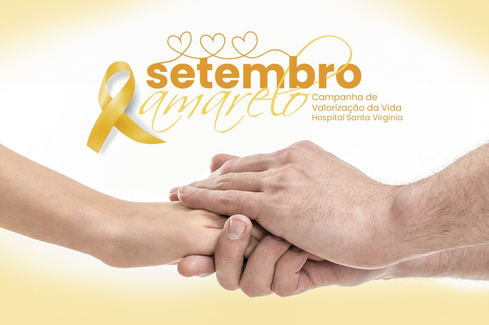

Em 2013, Antônio Geraldo da Silva, presidente da ABP, deu notoriedade e colocou no calendário nacional a campanha internacional Setembro Amarelo®. E, desde 2014, a Associação Brasileira de Psiquiatria – ABP em parceria com o Conselho Federal de Medicina – CFM divulgam e conquistam parceiros no Brasil inteiro com essa linda campanha.
O dia 10 deste mês é, oficialmente, o Dia Mundial de Prevenção ao Suicídio, mas a iniciativa acontece durante todo o ano.
Atualmente, o Setembro Amarelo® é a maior campanha anti estigma do mundo! Em 2023, o lema é “Se precisar, peça ajuda!” e diversas ações já estão sendo desenvolvidas.
O suicídio é uma triste realidade que atinge o mundo todo e gera grandes prejuízos à sociedade. De acordo com a última pesquisa realizada pela Organização Mundial da Saúde - OMS em 2019, são registrados mais de 700 mil suicídios em todo o mundo, sem contar com os episódios subnotificados, pois com isso, estima-se mais de 01 milhão de casos. No Brasil, os registros se aproximam de 14 mil casos por ano, ou seja, em média 38 pessoas cometem suicídio por dia.
Embora os números estejam diminuindo em todo o mundo, os países das Américas vão na contramão dessa tendência, com índices que não param de aumentar, segundo a OMS.
Sabe-se que praticamente 100% de todos os casos de suicídio estavam relacionados às doenças mentais, principalmente não diagnosticadas ou tratadas incorretamente.
Dessa forma, a maioria dos casos poderia ter sido evitada se esses pacientes tivessem acesso ao tratamento psiquiátrico e informações de qualidade.
É importante falar sobre o assunto para que as pessoas que estejam passando por momentos difíceis e de crise busquem ajuda e entendam que a vida sempre vai ser a melhor escolha.
Quando uma pessoa decide terminar com a sua vida, os seus pensamentos, sentimentos e ações apresentam-se muito restritivos, ou seja, ela pensa constantemente sobre o suicídio e é incapaz de perceber outras maneiras de enfrentar ou de sair do problema.
Essas pessoas pensam rigidamente pela distorção que o sofrimento emocional impõe.
Se informar para aprender e ajudar o próximo é a melhor saída para lutar contra esse problema tão grave.
É muito importante que as pessoas próximas saibam identificar que alguém está pensando em se matar e a ajude, tendo uma escuta ativa e sem julgamentos, mostrar que está disponível para ajudar e demonstrar empatia, mas principalmente levando-a ao médico psiquiatra, que vai saber como manejar a situação e salvar esse paciente.
- Carlos Eduardo Da Silva F.